1. Primary Sourcing Baseline (TowerCo-Led Scope): The primary operational objective of TelTech is to leverage Independent Tower Companies (TowerCos) under Master Lease Agreements (MLA) — through Tier 1 (Existing Co-Location on the 13,746 audited tower database) or Tier 2 (TowerCo Build-to-Suit / B2S). Under this primary baseline, all Site Acquisition (SAQ) work — candidate hunting, landlord negotiations, title due diligence, lease execution, Barangay clearances, LGU building permits, CAAP clearances, and commercial utility power — is STRICTLY THE SCOPE AND FINANCIAL RESPONSIBILITY OF THE TOWERCO, NOT THE VENDOR.
2. Mandatory Joint Approval Gate: Physical candidate hunting is executed by the TowerCo. Candidate approval is governed strictly by a Mandatory Joint Approval Gate: (a) The Turnkey Vendor conducts on-site technical vetting (RF LOS, antenna height, structural EPA headroom, DC power, cable tray routing) and issues formal technical endorsement in the TSSR; (b) TelTech Leadership evaluates commercial terms under MLA and issues final sign-off.
3. Vendor SAQ Standby Rate Card (SAQ-01 to SAQ-08): Evaluated strictly as a standby call-off rate card in the commercial price book for Tier 3 Operator Greenfield Own-Build exception sites. Billable only upon formal written Work Order issued by TelTech.
2. The 8-Gate Turnkey Implementation Pipeline
TelTech governs every candidate site through a rigorous, non-bypassable 8-Gate delivery pipeline. Advancing to subsequent gates requires verified milestone deliverables and formal cross-functional sign-off.
| Gate | Milestone Name | Primary Owner | Mandatory Entry Criteria | Deliverable & Exit Sign-Off |
|---|---|---|---|---|
| Gate 0 | Nominal Siting & Search Ring | RAN Planning | Clutter database & demand polygon | Nominal Search Ring Issued (500m urban / 1,000m rural) |
| Gate 1 | Candidate Siting & PCER | TowerCo / SAQ | Search Ring Dossier | Preliminary Candidate Evaluation Report (PCER: A/B/C) |
| Gate 2 | Technical Site Survey (TSSR) | Vendor & Eng. | Candidate A Selection | Drone 360°, TIA-222-H Structural & Grounding TSSR |
| Gate 3 | SAA, Permitting & Lease (NTP) | TowerCo & PMO | Approved TSSR | TowerCo SAA Approval, LGU Permits, Executed Lease, NTP |
| Gate 4 | Civil, Tower AMB & Power (RFI) | TowerCo / Civil | Issued NTP | 2x2m Pad, Grounding ≤ 5Ω, DC Power, RFI Certificate |
| Gate 5 | Telecom Installation (TI&C) | I&C Vendor | Signed RFI | 3x 8T8R RRU, Antennas, Sweeps (VSWR ≤ 1.35:1), TI Checklist |
| Gate 6 | On-Air, SSV & Site Acceptance | QA / Vendor | Commissioned BTS | IP Backhaul Sync, SSV Report (DL ≥ 450M), ATP-A/B Sign-Off |
| Gate 7 | Cluster RNO & Ops Handover | RNO & Ops | Contiguous 10-20 Sites On-Air | 14-Day OSS Stability (Avail ≥ 99.95%), TOC Handover to NOC |
3. Process Flowcharts & Swimlanes
Visual representation of key operational decision gates, inter-organizational handshakes, and execution workflows across TelTech, TowerCos, Turnkey Vendors, and Statutory Authorities.
4. Playbook A: Site Acquisition (SAQ) & Permitting
Site Acquisition transforms nominal RF planning search polygons into fully permitted, constructible compound footprints under valid commercial Master Lease Agreements.
- Search Ring Issuance: RAN Planning issues 6-digit WGS84 coordinates, 500m urban / 1,000m rural radius, target antenna height (30m to 45m AGL), and sector azimuths (0°, 120°, 240°).
- Candidate Ranking (PCER): Evaluation of Candidate A (Primary), Candidate B (Secondary), Candidate C (Contingency) submitted within 10 calendar days.
- Title & Property Due Diligence: Verification of clean Transfer Certificate of Title (TCT), Original Certificate of Title (OCT), or certified Tax Declaration. Property owner background checks.
- TowerCo SAA Execution: Submission of TelTech loading profile (3x 8T8R RRUs, 3x macro antennas, hybrid DC/fiber cables, 2.0m x 2.0m ground footprint).
- Statutory Permitting Sequence:
- Barangay Council Resolution & Barangay Clearance
- Homeowners Association (HOA) / Community No-Objection Resolution
- Civil Aviation Authority of the Philippines (CAAP) Height Clearance
- DENR Certificate of Non-Coverage (CNC) / Environmental Compliance Certificate (ECC)
- LGU Building Permits under National Building Code (PD 1096): Architectural, Structural, Civil, Electrical, Mechanical
- Bureau of Fire Protection (BFP) Fire Safety Inspection Certificate (FSIC)
- Certificate of Final Electrical Inspection (CFEI)
- Commercial Power Energization (Meralco / Electric Cooperative)
- LGU Certificate of Occupancy & Notice to Proceed (NTP)
5. Playbook B: Detailed Engineering & Technical Site Survey (TSSR)
Engineering verification guarantees physical feasibility, structural integrity, and RF propagation conformance prior to committing capital.
- Calibrated Drone Survey: 360-degree high-definition video and panoramic photographic sweep at 30m, 35m, 40m, and 45m AGL centerlines. Optical verification of Line-of-Sight (LOS) over residential settlements and terrain clutter.
- TIA-222-H Structural & Wind Stress Simulation: Multi-member structural modeling evaluating Effective Projected Area (EPA) and total dead weight of active equipment under 250 km/h basic wind speed (Category 5 typhoon resilience). Wet-sealed endorsement by a licensed Professional Structural Engineer (PE).
- 3-Point Grounding Fall-of-Potential Test: Ground resistance measurement strictly mandating ≤ 5.0 Ohms pursuant to Philippine Electrical Code (PEC) and TelTech specifications.
- DC Power & Autonomy Calculation: Verification of AC utility service entrance, transformer capacity (kVA), DC rectifier modules, and LiFePO4 battery bank dimensioned for ≥ 4.0 hours autonomy @ 3.0 kW load (≤ 80% DoD).
- Detailed Engineering Design (DED): Signed and sealed AutoCAD blueprints: General Layout, Tower Elevation, AMB Brackets, Single Line Diagram (SLD), Grounding Ring Grid, and Bill of Quantities (BoQ).
6. Playbook C: Supply Chain, Logistics & Buffer Management
End-to-end logistics coordination ensures active telecom equipment, passive hardware, and installation materials arrive synchronized at regional sites.
- Port Customs Clearance: Clearing active OEM radio shipments at Port of Manila and Batangas Container Terminal.
- Regional Staging Depots: Central storage in Mega Manila supported by regional depots in North Luzon (Pampanga), South Luzon (Batangas), Visayas (Cebu), and Mindanao (Davao).
- BOM Pre-Kitting: Assembly and staging of complete site packages (1x BBU, 3x RRUs, 3x Antennas, optical jumpers, DC trunk cables, Type 2 DC SPDs, grounding kits) with serial barcode scanning into ERP.
- Final-Mile Transport: Dedicated delivery to remote barangay sites utilizing 4x4 trucks, motorized bancas for island crossings, or manual porterage across unpaved mountain terrain. Comprehensive in-transit cargo insurance.
- 2.0% Buffer Spares Float: Continuous audited maintenance of a 2.0% active hardware float for Advance Hardware Replacement (AHR) with RMA factory repair turnaround ≤ 30 calendar days.
7. Playbook D: Civil, Structural & Power Implementation
Standardized execution of civil compound infrastructure, grounding systems, and DC power plant installations.
- Civil Foundation Pad: 2.0m x 2.0m x 200mm reinforced concrete slab (3,000 psi compressive strength), 2.4m galvanized steel security fence with 3 strands of barbed wire, and anti-vegetation geotextile membrane with gravel bedding.
- Grounding Grid Cadwelding: Exothermic Cadweld bonding of 50mm² bare copper conductor ring with 3x copper-clad ground rods (16mm dia x 3.0m length) bonded to the main tower grounding grid, achieving ≤ 5.0 Ohms.
- DC Power Plant: Installation of outdoor 6.0 kW DC rectifier cabinet, distribution breakers, Type 1+2 AC/DC surge arrestors, and LiFePO4 battery banks (48V 150Ah/200Ah).
- Ready for Installation (RFI) Gate: Formal joint inspection verifying pad, fence, earthing, and power energization, concluding with signed RFI Certificate.
8. Playbook E: Telecom Installation, Commissioning & Integration (TI&C)
Telecom rigging, cabling, RF sweep testing, and network integration executed by certified telecom engineers.
- Tower Rigging: Hoisting and mounting 3x high-gain macro antennas and 3x 8T8R RRUs on tower AMBs at approved AGL centerlines. Setting azimuths (0°, 120°, 240°) and mechanical downtilts using calibrated digital inclinometers.
- eRET AISG 2.0 Wiring: Daisy-chaining eRET control cables for remote electrical downtilt control from the EMS/OSS.
- Cabling & Weatherproofing: Armored hybrid optical and DC power trunk cables routed along cable gantries. Cold-shrink weatherproofing boots applied on all RF jumper connections. Tower-top and tower-base grounding kits bonded to external ground busbars.
- Calibrated RF Sweep Testing: Return Loss ≥ 16.5 dB and VSWR ≤ 1.35:1 verified across all antenna ports using a calibrated SiteMaster analyzer.
- BBU Integration & Backhaul: 19-inch rack mounting of BBU, GPS antenna installation for PTP/SyncE clock sync, IP backhaul turn-up (VLAN, BGP), and 5G Core (AMF/UPF) integration. Clearing all active alarms and achieving commercial on-air status.
9. Playbook F: Single Site Verification (SSV) & Acceptance (ATP)
Mandatory 3-stage acceptance procedure certifying physical, electrical, and RF performance conformance.
- ATP-A (Civil, Mechanical & Electrical): Joint visual inspection: bolt torque marks, cable dressing, weatherproofing integrity, earth resistance (≤ 5.0 Ohms), label compliance, and site housekeeping.
- ATP-B (Active Telecom & Functional): Remote EMS verification: 8T8R MU-MIMO operation, eRET remote tilt range (0° to 10°), battery discharge failover simulation, and remote reboot tests.
- SSV Stationary & Handover Testing: Field drive test verification:
- Peak DL Throughput ≥ 450 Mbps (Near site, 256-QAM)
- Cell-Edge DL Throughput ≥ 50 Mbps (at RSRP ≥ -95 dBm)
- Cell-Edge UL Throughput ≥ 15 Mbps
- Round-Trip Latency ≤ 18 ms
- Intra-site and inter-site handover success rate ≥ 99.5%
- Snagging Resolution: Class A blockers rectified within 24 hours, Class B minor snags within 7 days, Class C documentation within 14 days.
10. Playbook G: Cluster Radio Network Optimization (RNO)
Multi-site optimization across contiguous clusters of 10 to 20 sites to maximize spectral efficiency and user throughput.
- Cluster Drive Testing: Comprehensive scanner and test UE drive testing across contiguous clusters. Mapping coverage overlap, RSRP, SINR, pilot pollution, and handover boundaries.
- Physical & Soft Tuning: Systematic electrical downtilt (eRET) adjustments, azimuth realignments, neighbor list optimization, and PCI deconfliction adhering to modulo-3 and modulo-30 collision rules.
- 14-Day Statistical OSS Acceptance: Continuous post-launch monitoring over 14 consecutive calendar days validating:
- Radio Network Availability ≥ 99.95%
- Call / Session Setup Success Rate (CSSR) ≥ 99.60%
- Call / Session Drop Rate (CDDR) ≤ 0.15%
- Downlink Average PRB Utilization balanced across sectors
11. Playbook H: 24/7 Managed NOC & Operations Handover
Seamless transition from deployment to continuous operational service assurance under 24/7/365 Managed Services.
- Transfer of Control (TOC): Formal handover protocol from Rollout PMO to Network Operations. Delivery of complete as-built documentation, warranty certificates, spare parts inventory, and EMS/OSS credentials.
- Central NOC Surveillance: 24/7 active surveillance, automated alarm deduplication, trouble ticket generation within 5 minutes, and daily 06:00 PHT Operational Flash Reports.
- Field First Line Maintenance (FLM): Regional 24/7 mobile crews with mandated MTTR SLAs:
- Severity 1 (Critical Outage): Response ≤ 15m | MTTR ≤ 2.0h (Urban) / ≤ 4.0h (Rural)
- Severity 2 (Major Degradation): Response ≤ 30m | MTTR ≤ 4.0h (Urban) / ≤ 6.0h (Rural)
- Severity 3 (Minor Fault): Response ≤ 1h | MTTR ≤ 12.0h (Urban) / ≤ 24.0h (Rural)
- Severity 4 (Warning / Routine): Response ≤ 4h | MTTR ≤ 48.0h (Urban) / ≤ 72.0h (Rural)
- Quarterly Preventive Maintenance (PM): 100% completion of Module A (Telecom), Module B (Power & LiFePO4), Module C (Grounding & Lightning), Module D (Tower & Rigging - Bi-annual), and Module E (Civil Compound).
12. Corporate Organization Structure & Interactive Org Charts
Extracted directly from the official TTSI-ISMS-MNL-001 Manual (Teltech). Click any branch below to view its official organizational chart, leadership hierarchy, unit breakdown, and ISO/IEC 27001 responsibilities:
TELTECH Corporate Table of Organization
High-level corporate governance framework encompassing the Board of Directors, President & CEO, and the three executive pillars: Technology & Operations, Commercial & Strategy, and Corporate Services & Governance.
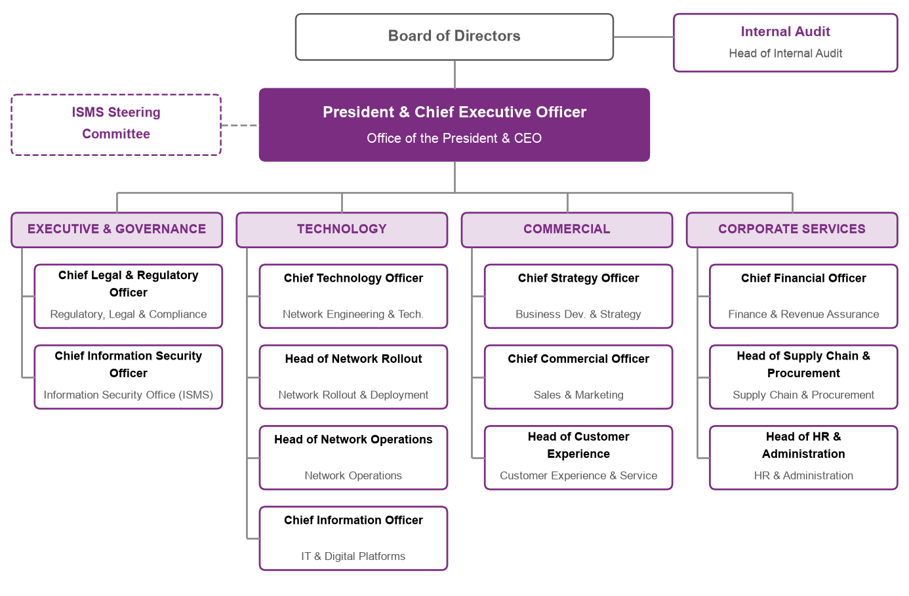
Core Executive Pillars:
- Executive & Governance: Office of the President & CEO, Legal & Regulatory, CISO / Information Security Office, Internal Audit
- Technology & Operations: Chief Technology Officer (CTO), Head of Network Rollout, Head of Network Operations, Chief Information Officer (CIO)
- Commercial & Strategy: Chief Strategy Officer (CSO), Chief Commercial Officer (CCO), Head of Customer Experience
- Corporate Services: Chief Financial Officer (CFO), Head of Supply Chain & Procurement, Head of HR & Administration
Network Rollout & Deployment Branch
Primary operational execution engine responsible for turnkey delivery from site acquisition to telecom integration and ATP acceptance.
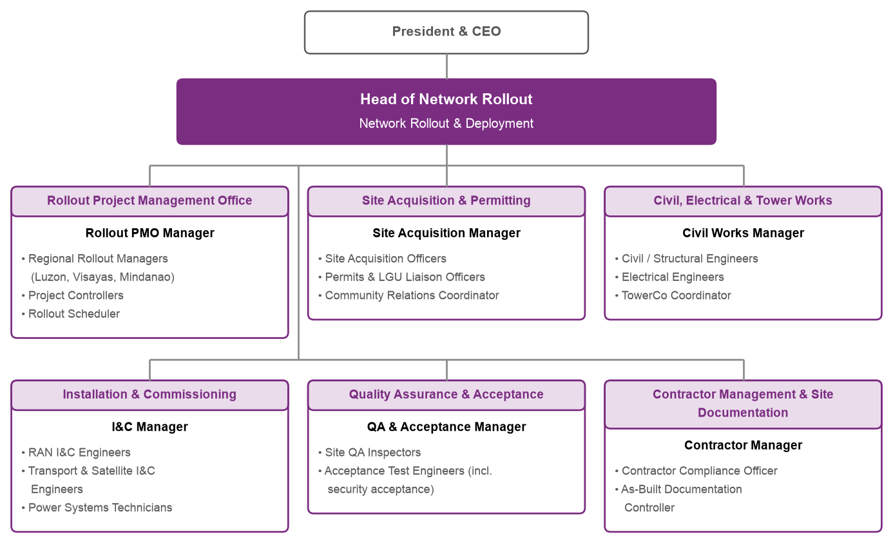
Departmental Units & Staffing Positions:
| Unit / Department | Unit Lead | Roles & Positions |
|---|---|---|
| Rollout Project Management Office (PMO) | Rollout PMO Manager | Regional Rollout Managers (Luzon, Visayas, Mindanao), Project Controllers, Rollout Schedulers, CAPEX & Milestone Tracking Specialists |
| Site Acquisition & Permitting | Site Acquisition Manager | Site Acquisition Officers (SAQ), Permits & LGU Liaison Officers, Community Relations Coordinators, Title Due Diligence & Cadastral Officers |
| Civil, Structural & Power Works | Civil Works Manager | Civil & Structural Engineers (PE Licensed), Power Systems Engineers, Soil & Foundation Specialists, Cadweld & Earthing Inspectors |
| Installation & Commissioning (I&C) | I&C Manager | RAN I&C Engineers (8T8R MU-MIMO), Transport & Satellite I&C Engineers, Power Systems Technicians, Rigging Safety Supervisors |
| Quality Assurance & Acceptance | QA/Acceptance Manager | Acceptance Engineers (ATP-A & ATP-B), Drive Test & Single Site Verification (SSV) Engineers, Snagging & Punch-List Controllers |
| Contractor & Partner Management | Partner Management Manager | Contractor Safety & Performance Evaluators, TowerCo Delivery Coordinators (MLA Operations), Vendor SLA Monitoring Officers |
Network Engineering & Technology Branch
Defines radio architecture, spectrum optimization on Band n50 (60 MHz TDD), core/transmission engineering, and technology standards.
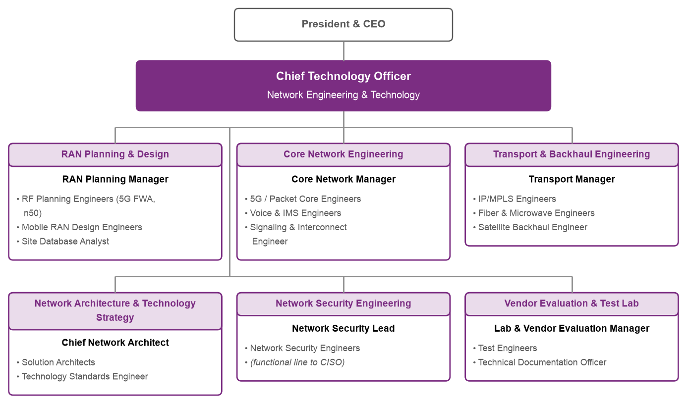
Departmental Units & Staffing Positions:
| Unit / Department | Unit Lead | Roles & Positions |
|---|---|---|
| RAN Planning & Design | RAN Planning Manager | RF Planning Engineers (5G FWA, n50 TDD), Mobile RAN Design Engineers, Site Database & Clutter Analysts, Cell Design Data (CDD) Specialists |
| Network Architecture & Strategy | Chief Network Architect | 5G Solution Architects, Technology Standards Engineers, Spectrum Strategy Specialists |
| Core Network Engineering | Core Network Manager | 5G Standalone (SA) / Packet Core Engineers, Voice & IMS Engineers, Signaling & Interconnect Engineers |
| Transport & Backhaul Engineering | Transport Manager | IP/MPLS Engineers, Fiber Optics & Microwave Engineers, Starlink / LEO Satellite Backhaul Engineers |
| Vendor Evaluation & Test Lab | Lab & Vendor Evaluation Manager | Test Engineers, CPE Interoperability Specialists, Technical Documentation Officers |
| Network Security Engineering | Network Security Lead | Network Security Engineers (functional line to CISO), Firewall & Boundary Defense Specialists |
Network Operations Branch
Directs 24/7/365 network surveillance, nationwide field first-line maintenance (FLM), continuous optimization, and high availability (>= 99.95%).
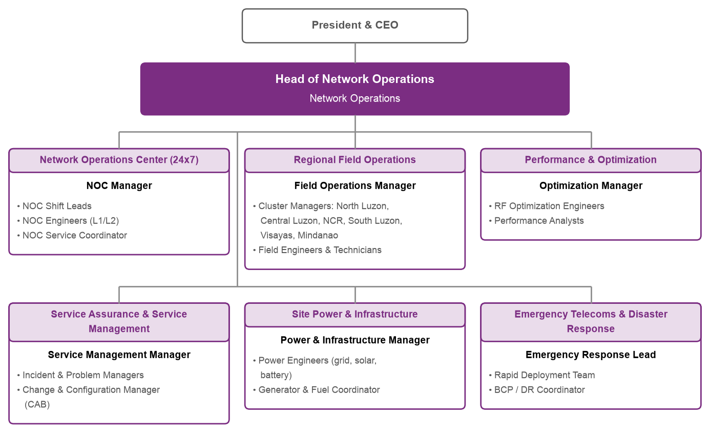
Departmental Units & Staffing Positions:
| Unit / Department | Unit Lead | Roles & Positions |
|---|---|---|
| 24x7 Network Operations Center (NOC) | NOC Manager | Shift Leaders & Operators (L1 Tier-1 Surveillance), RAN / Core / IP Surveillance Engineers, Incident Managers & Dispatchers |
| Field Operations & Maintenance (FLM) | Field Operations Manager | Regional Field Leads (Luzon, Visayas, Mindanao), Field Maintenance Technicians (FLM), Emergency Mobile Restoration Crews |
| Network Performance & Optimization | Performance & Optimization Manager | Optimization Engineers (RAN, Core, IP), Drive Test & Benchmark Teams, Worst Performing Cell (WPC) Analysts |
| Service Assurance & Problem Management | Problem Management Lead | Problem Analysts, Root Cause Analysis (RCA) Engineers, OEM TAC Escalation Managers |
| Facilities, Power & Passive Infrastructure | Passive Infrastructure Manager | Genset & Solar Maintenance Technicians, Air-Conditioning & Environmental Techs, Tower Climbing & Structural Inspection Specialists |
| Spares & RMA Management | Spares Coordinator | Logistics & Buffer Inventory Controllers (2% Spares Float), RMA / OEM Repair Tracking Specialists |
Supply Chain & Procurement Branch
Governs global strategic sourcing, port customs clearance, regional staging depots, and equipment kitting for rapid field deployment.
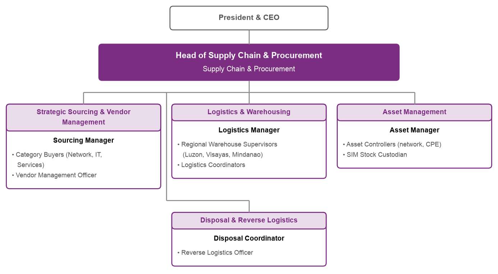
Departmental Units & Staffing Positions:
| Unit / Department | Unit Lead | Roles & Positions |
|---|---|---|
| Strategic Sourcing & Vendor Management | Sourcing Manager | Category Buyers (Network, IT, Services), Vendor Management Officers, Commercial Contract Evaluators |
| Logistics & Warehousing | Logistics Manager | Regional Warehouse Supervisors (Luzon, Visayas, Mindanao), Logistics Coordinators, Freight Forwarding & Customs Specialists |
| Asset Management | Asset Manager | Asset Controllers (Network Equipment & High-Gain CPE), SIM Stock Custodians, ERP Serial-Tracking Specialists |
| Disposal & Reverse Logistics | Disposal Coordinator | Reverse Logistics Officers, E-Waste & Decommissioning Specialists |
Regulatory, Legal & Compliance Branch
Oversees franchise compliance under RA 10182, NTC Provisional Authorities, spectrum fees, TowerCo MLAs, and statutory filings.
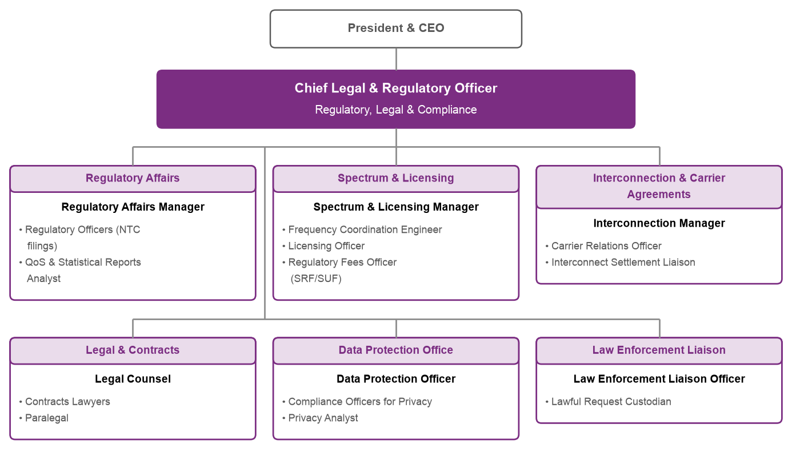
Departmental Units & Staffing Positions:
| Unit / Department | Unit Lead | Roles & Positions |
|---|---|---|
| Regulatory Affairs | Regulatory Affairs Manager | Regulatory Officers (NTC Filings & PAs), QoS & Statistical Reports Analysts, 70:30 Rollout Ratio Compliance Officers |
| Spectrum & Licensing | Spectrum & Licensing Manager | Frequency Coordination Engineers, Station Licensing Officers, Regulatory Fees Officers (SRF/SUF) |
| Legal & Contracts | Legal Counsel | Contracts Lawyers (TowerCo MLAs & Turnkey Vendor Master Agreements), Paralegals, Dispute Resolution Specialists |
| Data Protection Office | Data Protection Officer (DPO) | Compliance Officers for Privacy (COP), Privacy Analysts (SIM Registration & Subscriber Data) |
| Interconnection & Carrier Agreements | Interconnection Manager | Carrier Relations Officers, Interconnect Settlement Liaisons |
| Law Enforcement Liaison | Law Enforcement Liaison Officer | Lawful Request Custodians (Subpoena & Security Compliance) |
Information Security Office (ISMS)
Enforces critical infrastructure cybersecurity under ISO/IEC 27001:2022, ISO/IEC 27011, and Public Service Act (RA 11659).
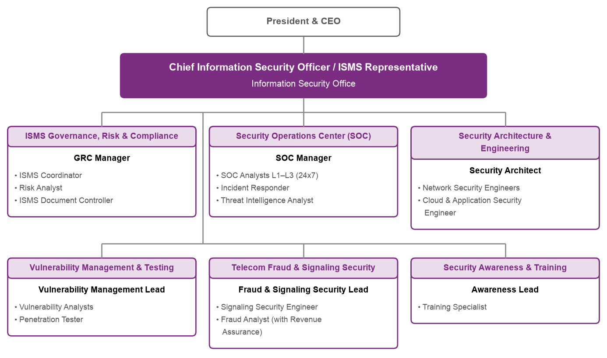
Departmental Units & Staffing Positions:
| Unit / Department | Unit Lead | Roles & Positions |
|---|---|---|
| ISMS Governance, Risk & Compliance | GRC Manager | ISMS Coordinators, Risk Analysts, Document Controllers |
| Security Operations Center (SOC) | SOC Manager | SOC Analysts L1-L3 (24x7), Incident Responders, Threat Intelligence Analysts |
| Security Architecture & Engineering | Security Architect | Network Security Engineers, Cloud & Application Security Engineers |
| Vulnerability Management & Testing | Vulnerability Management Lead | Vulnerability Analysts, Penetration Testers, Site Hardening Auditors |
| Telecom Fraud & Signaling Security | Fraud & Signaling Security Lead | Signaling Security Engineers (Diameter, HTTP/2, GTP), Fraud Analysts |
Information Technology & Digital Platforms
Operates cloud infrastructure, OSS/BSS platforms, real-time charging (CHF), billing, CRM, and digital self-care apps.
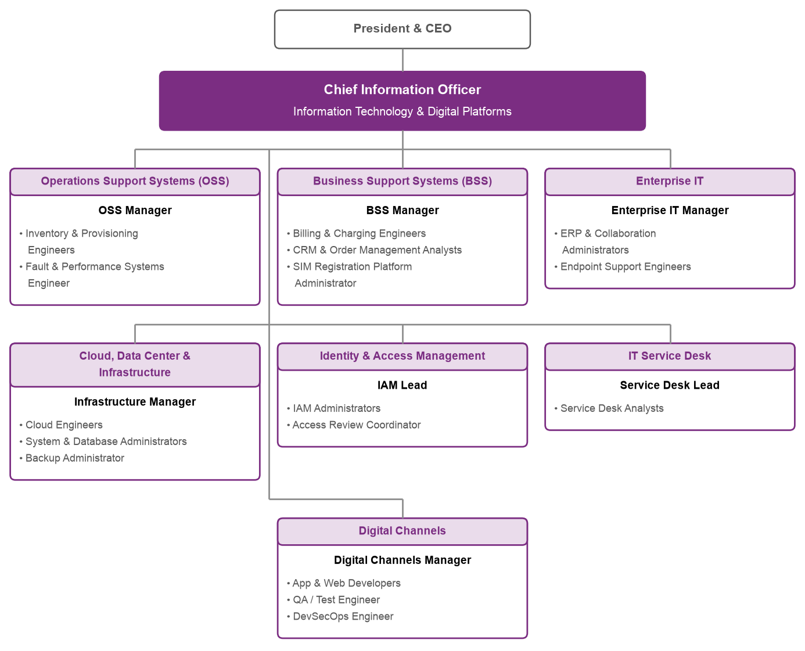
Departmental Units & Staffing Positions:
| Unit / Department | Unit Lead | Roles & Positions |
|---|---|---|
| Operations Support Systems (OSS) | OSS Manager | EMS / NMS Integration Engineers, Provisioning Engineers, Fault & Performance Systems Engineers |
| Business Support Systems (BSS) | BSS Manager | Billing & Charging Engineers, CRM & Order Management Analysts, SIM Registration Platform Administrators |
| Cloud, Data Center & Infrastructure | Infrastructure Manager | Cloud Engineers, System & Database Administrators, Backup & DR Administrators |
| Identity & Access Management | IAM Lead | IAM Administrators, Privileged Access (PAM) Coordinators |
Office of the President & CEO
Executive leadership, strategic direction, corporate performance, and PMO oversight for nationwide execution.
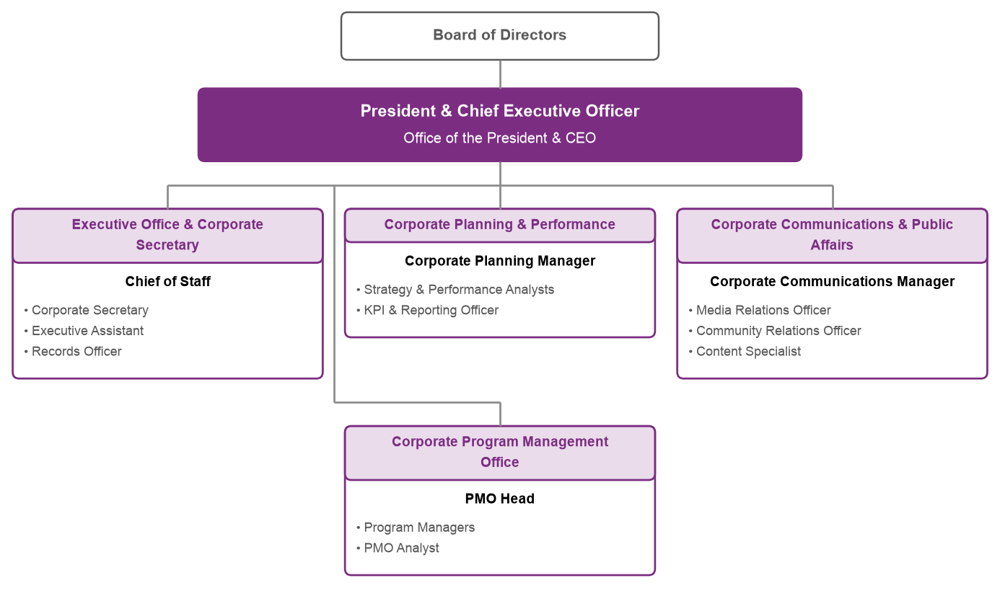
Departmental Units & Staffing Positions:
| Unit / Department | Unit Lead | Roles & Positions |
|---|---|---|
| Executive Office & Corporate Secretary | Chief of Staff | Corporate Secretary, Executive Assistant, Records Officer |
| Corporate Program Management Office | PMO Head | Program Managers, PMO Analysts, Executive Reporting Officers |
| Corporate Planning & Performance | Corporate Planning Manager | Strategy & Performance Analysts, KPI & Governance Officers |
Internal Audit Branch
Independent assurance reporting to the Board Audit Committee on operational efficiency, financial control, and ISMS conformance.
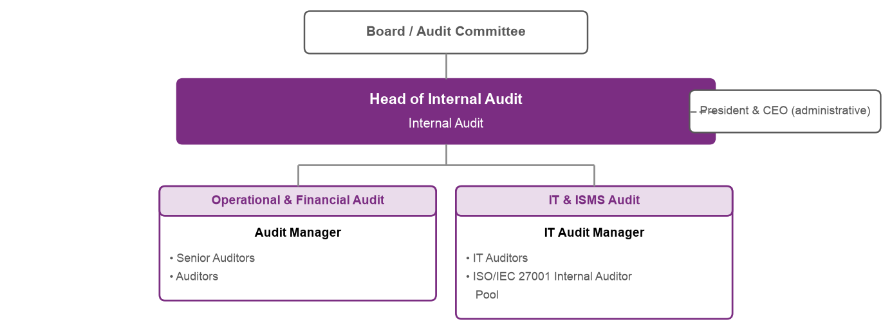
Departmental Units & Staffing Positions:
| Unit / Department | Unit Lead | Roles & Positions |
|---|---|---|
| Operational & Financial Audit | Audit Manager | Senior Auditors, Field Rollout Auditors, Financial Process Auditors |
| IT & ISMS Audit | IT Audit Manager | IT Auditors, ISO/IEC 27001 Internal Auditor Pool |
Business Development & Strategy Branch
Leads financial modeling, strategic partnerships with TowerCos and satellite operators, and universal access programs.
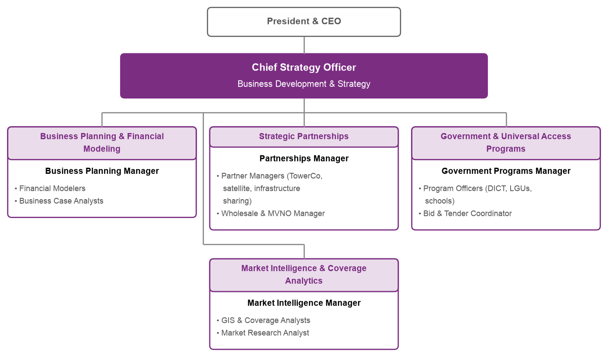
Departmental Units & Staffing Positions:
| Unit / Department | Unit Lead | Roles & Positions |
|---|---|---|
| Business Planning & Modeling | Business Planning Manager | Financial Modelers, Business Case Analysts, Capex/Opex Optimizers |
| Strategic Partnerships | Partnerships Manager | Partner Managers (TowerCo, Satellite, Infra-Sharing), Wholesale & MVNO Managers |
| Market Intelligence & Coverage | Market Intelligence Manager | GIS & Coverage Analysts, Market Research Analysts |
| Government Programs | Government Programs Manager | Program Officers (DICT FPIAP, LGUs, Schools), Bid & Tender Coordinators |
Sales & Marketing Branch
Drives subscriber acquisition across consumer FWA, enterprise broadband, and nationwide dealer/reseller distribution networks.
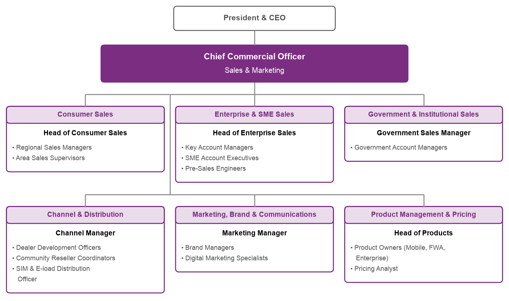
Departmental Units & Staffing Positions:
| Unit / Department | Unit Lead | Roles & Positions |
|---|---|---|
| Consumer Sales | Head of Consumer Sales | Regional Sales Managers, Area Sales Supervisors, Field Activation Agents |
| Channel & Distribution | Channel Manager | Dealer Development Officers, Community Reseller Coordinators, SIM & E-load Distribution Officers |
| Product Management & Pricing | Head of Products | Product Owners (5G FWA, Mobile, Enterprise), Pricing Analysts |
Customer Experience & Service Branch
Manages 24/7 omni-channel contact center, subscriber trouble tickets, outdoor CPE installation, and field customer care.
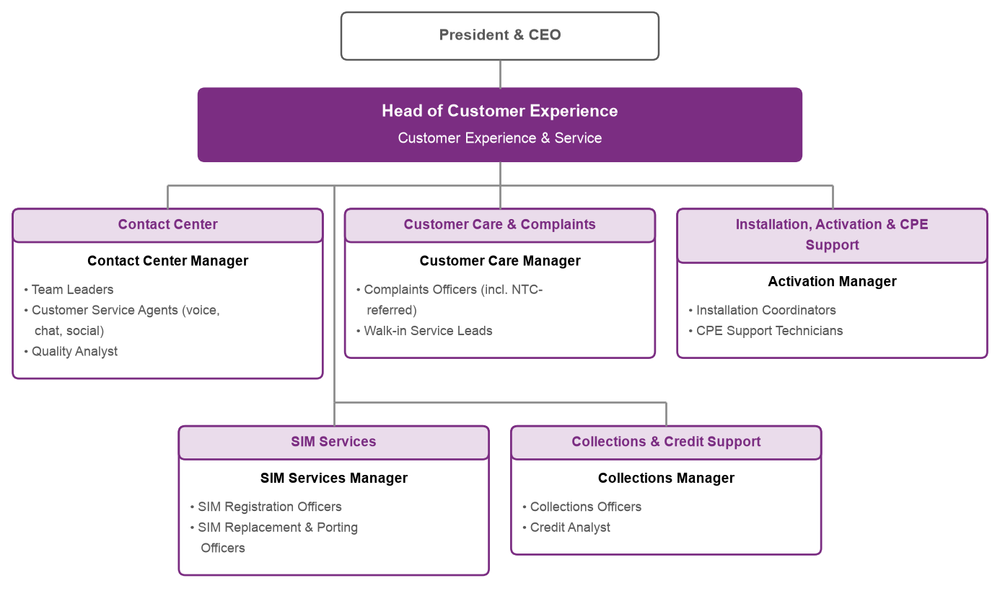
Departmental Units & Staffing Positions:
| Unit / Department | Unit Lead | Roles & Positions |
|---|---|---|
| Contact Center | Contact Center Manager | Team Leaders, Customer Service Agents (Voice, Chat, Social), Quality Analysts |
| Installation, Activation & CPE Support | Activation Manager | Installation Coordinators, CPE Support Technicians, Field Dispatch Schedulers |
| Customer Care & Complaints | Customer Care Manager | Complaints Officers (incl. NTC-Referred), Walk-in Service Leads |
Finance & Revenue Assurance Branch
Oversees financial planning, capital allocation, revenue assurance, tax compliance, and vendor milestone disbursements.
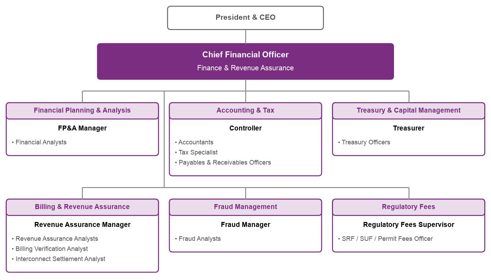
Departmental Units & Staffing Positions:
| Unit / Department | Unit Lead | Roles & Positions |
|---|---|---|
| Financial Planning & Analysis (FP&A) | FP&A Manager | Financial Analysts, Rollout Capex Controllers |
| Billing & Revenue Assurance | Revenue Assurance Manager | Revenue Assurance Analysts, Billing Verification Analysts, Interconnect Settlement Analysts |
| Accounting & Tax | Controller | Accountants, Tax Specialists, Payables & Receivables Officers |
| Treasury & Capital Management | Treasurer | Treasury Officers, Vendor Financing Facility Administrators |
Human Resources & Administration Branch
Directs organizational staffing, technical training, occupational health and safety (HSE), and regional administrative support.
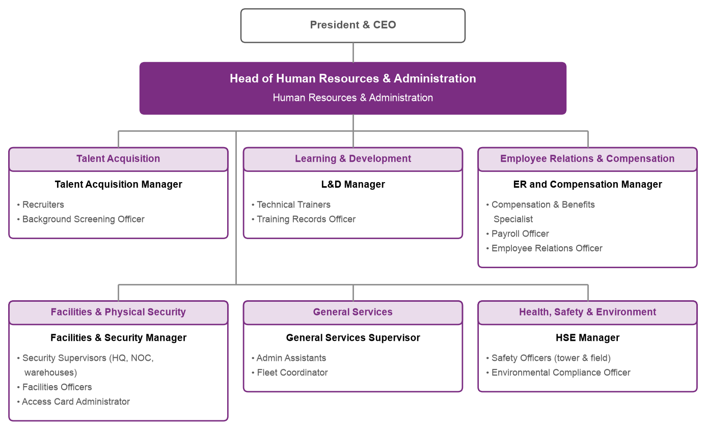
Departmental Units & Staffing Positions:
| Unit / Department | Unit Lead | Roles & Positions |
|---|---|---|
| Health, Safety & Environment (HSE) | HSE Manager | Safety Officers (Tower Climbing & Field), Environmental Compliance Officers, DOLE OSH Specialists |
| Talent Acquisition | Talent Acquisition Manager | Technical Recruiters, Background Screening Officers |
| Learning & Development | L&D Manager | Technical Telecom Trainers, Safety Certification Instructors |
| Facilities & Physical Security | Facilities & Security Manager | Security Supervisors (HQ, NOC, Warehouses), Facilities Officers |
13. Program RACI Governance Matrix
Operational assignment matrix delineating Responsible (R), Accountable (A), Consulted (C), and Informed (I) roles across all 25 core delivery activities:
| Deployment Activity | TelTech PMO | TelTech Eng | TelTech Ops | TowerCo | Vendor | LGU / Reg. |
|---|---|---|---|---|---|---|
| 1. Nominal Search Ring Issuance | C | A / R | I | I | C | I |
| 2. Candidate Siting & PCER Survey | I | C | I | A / R | C | I |
| 3. Technical Site Survey (TSSR) | I | A | I | C | R | I |
| 4. Mandatory Joint Approval Sign-Off | A | C | I | C | C | I |
| 5. TowerCo Space Application (SAA) | I | C | I | A / R | C | I |
| 6. Landlord Lease Execution | I | I | I | A / R | I | I |
| 7. Barangay & HOA Clearances | I | I | I | A / R | I | C |
| 8. LGU Building Permit (PD 1096) | I | I | I | A / R | I | A |
| 9. CAAP Height Clearance | I | I | I | A / R | I | A |
| 10. Commercial Power Energization | I | I | I | A / R | I | A |
| 11. Notice to Proceed (NTP) Issuance | A / R | C | I | C | I | I |
| 12. Active Equipment Customs Clearance | I | I | I | I | A / R | C |
| 13. Regional Warehousing & BOM Kitting | I | I | I | I | A / R | I |
| 14. Final-Mile Hauling to Site | I | I | I | I | A / R | I |
| 15. Civil Pad & Grounding Construction | I | C | I | A / R | C | I |
| 16. Ready for Installation (RFI) Gate | A | C | I | R | C | I |
| 17. Active Telecom Installation (TI) | I | C | I | I | A / R | I |
| 18. RF Antenna Sweep & VSWR Testing | I | C | I | I | A / R | I |
| 19. IP Backhaul & 5GC Integration | I | A | C | I | R | I |
| 20. On-Air Broadcast & Alarm Clearance | I | A | C | I | R | I |
| 21. Single Site Verification (SSV) | I | A | I | I | R | I |
| 22. ATP-A / ATP-B Acceptance Sign-Off | A / R | C | C | C | R | I |
| 23. Cluster RNO Drive Test & Tuning | I | A | C | I | R | I |
| 24. 14-Day Post-Launch OSS Stability | I | A | C | I | R | I |
| 25. Operational TOC Handover to NOC | A | C | R | I | C | I |
14. Risk Management Register & Mitigation Strategy
Operational risk matrix addressing statutory, environmental, commercial, and technical risks:
| Risk ID | Description & Impact | Likelihood | Severity | Mitigation Strategy |
|---|---|---|---|---|
| RSK-01 | LGU Permitting Bureaucracy (PD 1096 delays) | High | High | Enforce RA 11032 Ease of Doing Business statutory 7-day deemed-approved rule; engage local LGU liaison officers; pre-clear DED designs. |
| RSK-02 | TowerCo Structural Overload (Excess EPA) | Medium | High | Pre-audit TowerCo database; specify lightweight 8T8R RRUs; request TowerCo tower reinforcement or swap to Candidate B. |
| RSK-03 | Utility Commercial Energization Lead Times | High | High | Install temporary DC genset or solar-battery hybrid kit; negotiate bulk energization master agreements with Meralco and electric coops. |
| RSK-04 | Typhoons & Cat-5 Severe Weather Disruptions | High | High | Mandate TIA-222-H 250 km/h wind design; secure regional mobile emergency restoration crews; pre-position spare antennas and generators. |
| RSK-05 | Remote Island & GIDA Logistics Delays | Medium | Medium | Utilize regional staging buffer depots in Luzon, Visayas, Mindanao; partner with local motorized banca operators; enforce 2% active spare float. |
| RSK-06 | Fiber Backhaul Cuts & Transmission Failures | High | High | Deploy dual-homed Starlink LEO satellite backhaul at critical cluster hubs; establish automated IP routing failover. |
| RSK-07 | External RF Jamming & Unauthorized Boosters | Medium | Medium | Rapid deployment of interference hunting teams with portable spectrum analyzers; formal NTC Enforcement Division coordination. |
| RSK-08 | Contractor Safety & Falls from Height Incidents | Low | Critical | Strict DOLE OSH compliance; mandatory riggers' safety certification; 100% daily toolbox safety briefings; immediate stop-work authority. |